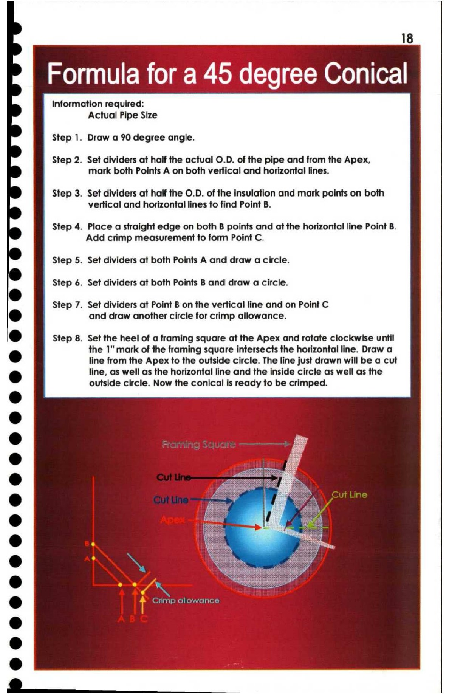

18. Formula for a 45 Degree Conical

18
Formula for a 45 degree Conical
Information required:
Actual Pipe Size
Step 1. Draw a 90 degree angle.
Step 2. Set dividers at half the actual O.D. of the pipe and from the Apex,
mark both Points A on both vertical and horizontal lines.
Step 3. Set dividers at half the O.D. of the insulation and mark points on both
vertical and horizontal lines to find Point B.
Step 4. Place a straight edge on both B points and at the horizontal line Point B.
Add crimp measurement to form Point C.
Step 5. Set dividers at both Points A and draw a circle.
Step 6. Set dividers at both Points B and draw a circle.
bd Step 7. Set dividers at Point B on the vertical line and on Point C
& and draw another circle for crimp allowance.
@ Step 8. Set the heel of a framing square at the Apex and rotate clockwise until
the 1" mark of the framing square intersects the horizontal line. Draw a
@ line from the Apex to the outside circle. The line just drawn will be a cut
@ line, as well as the horizontal line and the inside circle as well as the
outside circle. Now the conical is ready to be crimped.
(eis Vee eeu
@ Crimp allowance